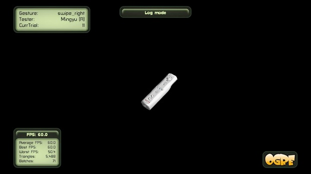

6D Motion Gesture Database

The goal of this database is to provide the user with comprehensive data of motion gestures, including the position, orientation, accelerations, and angular speeds. The 6DMG database also comes with sample programs (C++) to access and visualize these recorded motion gestures.
At the time of release, the gesture set contains 20 motion gestures, and involves 28 participants (21 right-handed and 7 left-handed, 22 male and 6 female, and ranging in age from 15 to 33). For each participant, we record 10 trials of each gesture.
Check out Motion Tracking for the 6 DOF motion tracking system we use, Motion Gestures for the definition, and Download for everything you need to use 6DMG. For more details, please read our technical report here.
*** This database is free for use in research projects. ***
Welcome to 6D Motion Gesture Database (6DMG)
To make the database portable and keep the flexibility, the raw binary data are stored. We are not limited to any specific file format of motion gestures, and exporters are welcome to output to a certain file format, such as AMC, BVH, C3D, or CSV. We currently provide the MATLAB exporter in 6DMG_loader and the exported .mat files as well.
A formal database structure is used to store the recorded motion gestures, which makes the management between gestures, testers, and trials very handy. The database structure is convenient for further development on motion gesture recognition. We use SQLite as the database engine, which is serverless and easy to integrate. The schema of the database is shown in Listing 1.
6DMG is a REAL database


Listing 1. the database schema
Copyright © 2012. School of Electrical and Computer Engineering,
Georgia Institute of Technology. All Rights Reserved.